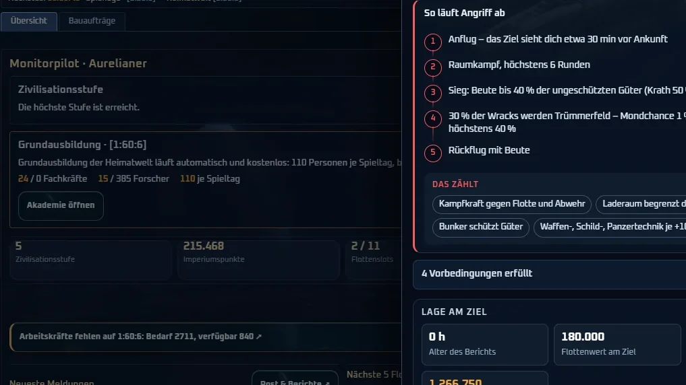

Flottenführung
Ein Blatt für jeden Auftrag
Jeder Flottenauftrag läuft über das Einsatzblatt über der aktuellen Ansicht: Ziel, Auftrag, Flotte, Ladung und Start – mit Regelkarte und Vorbedingungen bei jedem Schritt.
- Ziel & Auftrag: Suche nach Koordinate, System oder Spieler; unpassende Aufträge mit Grund, fehlende Aufklärung mit einem Knopf.
- Flotte: Vorlagen je Auftrag, Simulation mit 64 Läufen samt Trümmerfeld und Mondchance.
- Start: Hin- und Rückflugtempo getrennt, „kein Rückflug“, Ankunft planen oder an eine Flotte koppeln, Verbände bis 16 Flotten.
- Gestrandete Flotten versorgen, weiterfliegen oder übergeben; Bestände je Planet für Flotte, Verteidigung, Truppen und Raketen.